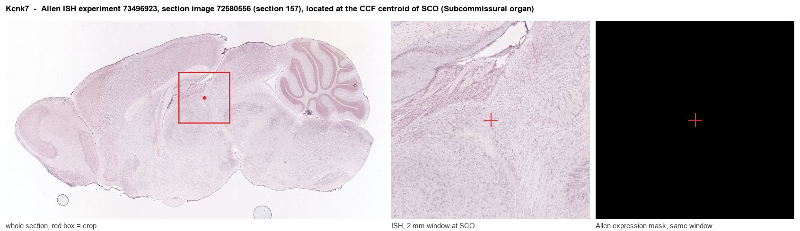
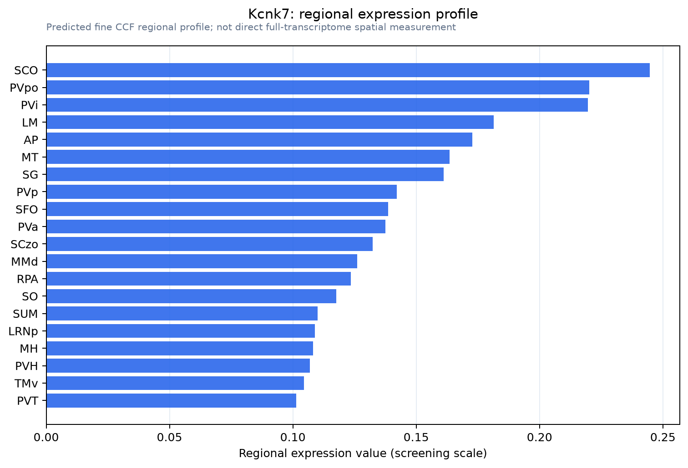

Kcnk7
Potassium channel subfamily K member 7 (Double-pore K(+) channel 3) (Neuromuscular two p domain potassium channel) (Putative potassium channel DP3)
Spatial tier: REGION_BIASED · Class: ION_CHANNEL · Top region: SCO (Subcommissural organ) · Positive regions: 33/554
Function in SCO: evidence, prediction, innovation
- Gene function
- KCNK7 belongs to the two-pore-domain (K2P) potassium channel family, whose members normally produce background leak currents that set resting membrane potential. KCNK7 is atypical: its first pore domain carries a non-canonical selectivity-filter sequence and it has not been made to conduct in heterologous systems, so it is treated as a silent or conditionally active K2P subunit, possibly requiring a partner subunit.
- Region function
- The subcommissural organ is an ependymal secretory gland in the roof of the third ventricle at the posterior commissure; it secretes SCO-spondin into cerebrospinal fluid to form Reissner's fibre, which contributes to CSF flow, aqueduct patency and axial/neurodevelopmental signalling.
- Published in this region
- none No region-specific literature found. The closest data are distribution surveys: Medhurst 2001 profiled human two-pore potassium channels across CNS and peripheral tissues, and Salinas 1999 described the family member cloning and the unusual pore structure of this branch; neither addressed the subcommissural organ.
- Predicted function
- Prediction: in subcommissural organ ependymocytes a K2P background conductance would set the resting potential and the potassium gradient that drives transepithelial ion and water movement into the CSF, coupling membrane potential to SCO-spondin secretion. If KCNK7 is silent alone, it most plausibly acts as a regulatory partner that suppresses or modifies other K2P channels in these cells. Knockdown is predicted to depolarise SCO ependymocytes and change secretory rate and CSF ionic composition, with hydrocephalus-relevant consequences; heterologous reconstitution with candidate partners is the first experiment.
- Innovation
- ★★★★★ 5/5 A functionally orphan potassium channel in a secretory CSF organ is unexplored territory, though its silence in heterologous systems makes it technically risky.
- Tools
- none known specific to KCNK7 (no selective blocker, no established knockout phenotype); approach via AAV-shRNA/CRISPR knockdown in FoxJ1-CreER mice plus anti-KCNK7 antibodies and heterologous expression assays.
- References
Direct evidence located at the region

Allen ISH experiment 73496923, section image 72580556 (section 157): the section that contains the CCF centroid of Subcommissural organ according to the Allen image-to-atlas alignment (reference_to_image), with a 2 mm window around that point. Left: whole section, red box = window. Middle: ISH signal. Right: Allen's expression-mask view of the same window. open this image in the Allen viewer
Direct spatial evidence

Regional expression figure

Predicted WMB × fine-CCF profile; not direct full-transcriptome spatial measurement.
Spatial profile
Evidence and specificity
- Evidence status
- PREDICTED_FINE
- Direct sources
- None; predicted localization only
- Exclusive threshold
- 12 positive regions out of 554
- Spatial specificity
- 0.309
- Top-region fraction
- 0.048
- Filter status
- PASS
Interpretation limits
- Cell-type-to-region projection is imputed expression, not direct spatial measurement.
- Adult reference atlases do not establish stability across age, sex, strain, state, or disease.
- Transcript abundance does not guarantee protein abundance or genetic-tool performance.